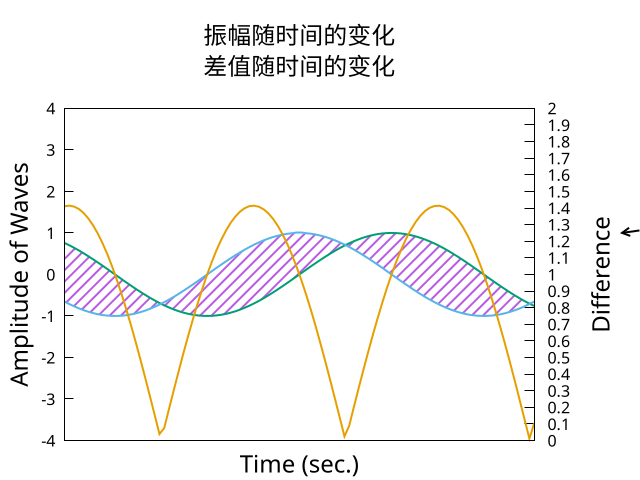

Gnuplot 绘图第八弹-3D 绘图
Table of Contents
1 绘制表面
# 网格的采样数 set isosamples 40 unset key # 隐藏被网格遮挡的元素 set hidden3d set title "J_0(r^2)" set xrange [-4:4] set yrange [-4:4] set ztics 1 # 视角角度 set view 29,53 splot besj0(x**2 + y**2)

2 坐标映射
# 将数据解释为圆柱形坐标系 set mapping cylindrical set hidden unset border unset tics set xrange [-pi:pi] set yrange [-pi:pi] set zrange [0:pi] set iso 60 unset key set view 90,0 splot '++' using 1:2:(sin($2)) with lines

3 给表面上色
set iso 100 set samples 100 unset key set title "J_0(r^2)" set xrange [-4:4] set yrange [-4:4] set ztics 1 unset surface set pm3d set view 29,53 splot besj0(x**2 + y**2)

set iso 30 set samples 30 unset key set title "J_0(r^2)" set xrange [-4:4] set yrange [-4:4] set ztics 1 unset surface set style line 1 lt 4 lw .5 set pm3d at s hidden3d 1 set view 29,53 splot besj0(x**2 + y**2)

4 等高线图
# 设置等高线的数量 set cntrparam levels 10 # 告诉 Gnuplot 绘制等高线图，并且绘制在 x-y 面上 set contour base unset sur # 从正上方看下来 set view map set xrange [-4:4] set yrange [-4:4] set iso 100 set samp 100 set key rmargin splot sin(x) + cos(2*y)

# 设置等高线的数量 set cntrparam levels 10 # 告诉 Gnuplot 绘制等高线图和表面 set contour both set xrange [-4:4] set yrange [-4:4] set ztics 1 set iso 50 set samp 50 set hidden3d set key rmargin set style line 1 lc rgb '#cccccc' set view 60, 30 splot sin(x) + cos(2*y) with lines ls 1

5 矢量图
set xrange [0:pi] set yrange [0:pi] set iso 60 set samp 60 unset key a = .2 plot '++' using 1:2:(-a*sin($1)*cos($2)):(a*cos($1)*sin($2))\ with vec size .06, 15 filled
set xrange [-pi:pi] set yrange [-pi:pi] set zrange [-pi:pi] unset key set iso 50 set samp 20 set ztics 1.5 set view 37, 300 a = .9 splot '++' using 1:2:(2*a*cos($2)*sin($1)):\ (-a*sin($1)*cos($2)):(a*cos($1)*sin($2)):(a*cos($1))\ with vec size .06, 15 filled

6 热力图
set xrange [-4:4] set yrange [-4:4] set iso 100 set samp 100 unset key unset surface set view map set pm3d at b splot sin(y**2 + x**2) - cos(x**2)

set palette defined (0 'black', 1 'gold') replot

set palette defined (0 'black', 1 'aquamarine', 1.5 'red', 2 'gold') replot

7 同时绘制热力图和等高线图
set xrange [0:pi] set yrange [0:pi] set iso 200 set samp 200 set cntrparam levels 10 unset key unset surface set view map set contour base set pm3d at b # 此处有四列数据，因为我们在上面告诉 Gnuplot 要画等高线图，等 4 列数据是可选的， # 用于给 surface 上色 splot '++' using 1:2:($1**2-$2**2):(sin($1**2+$2**2)) w l lw 2
8 同时绘制热力图和表面
set iso 40 set samp 40 unset key set xrange [-pi:pi] set yrange [-pi:pi] f(x,y) = sin(x)*cos(y) # 这一行使 surface 绘制出遮挡关系的同时，在最后才绘制 surface，否则会被下面的热 # 图盖住 set hidden front # 将 xy 平面移动到 -1 处 set xyplane at -1 splot f(x,y) with pm3d at b, f(x,y) with lines

reset set samp 40 set iso 40 set yrange [-1.5:1.5] set xrange [-1.5:1.5] unset ytics unset xtics unset key unset colorbox set hidden3d front a = .5 set xyplane at a f(x,y) = exp(-x**2-y**2) splot f(x,y) with pm3d at b, f(x,y) with lines, a with lines lt -100

set zrange [0:1] set contour base splot '++' using 1:2:(a):(sin($1)*cos($2)) with pm3d at b,\ '++' using 1:2:(f($1,$2)) with lines, a with lines lt -100

9 使用参数方程绘制路径
set samp 100 set xtics .4 set ytics .4 set parametric set urange [-pi:pi] set ztics 1 splot cos(u),sin(3*u),cos(5*u) lw 2
10 使用参数方程绘制表面
set param set iso 50 set ztics .5 set xtics .4 set ytics .4 set urange [-pi:pi] set vrange [-pi:pi] set hidd set view 50, 60 splot cos(u)*cos(v), sin(u)*cos(v), sin(u)

甚至我们还能给表面上色
set param set iso 50 set ztics .5 set xtics .4 set ytics .4 set urange [-pi:pi] set vrange [-pi:pi] set view 50, 60 # depthorder 是 pm3d 的一个特殊选项，会按离观察点的远近渲染颜色 set pm3d depthorder splot cos(u)*cos(v), sin(u)*cos(v), sin(u) with pm3d